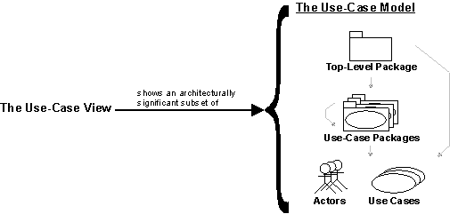

| Concept: Use-Case View |
 |
|
| Related Elements |
|---|
|
To provide a basis for planning the technical contents of iterations, an architectural view called the use-case view is used in the following: Requirements discipline. There is only one use-case view of the system, which illustrates the use cases and scenarios that encompass architecturally significant behavior, classes, or technical risks. The use-case view is refined and considered initially in each iteration.
 The use-case view shows an architecturally significant subset of the use-case model, a subset of the use cases and actors. The analysis, design, and implementation activities subsequent to requirements are centered on the notion of an architecture. The production and validation of that architecture is the main focus of the early iterations, especially during the Elaboration phase. Architecture is represented by a number of different architectural views, which in their essence are extracts illustrating the "architecturally significant" elements of the models. There are four additional views: the Logical View, Process View, Deployment View, and Implementation View. These views are handled in the Analysis & Design and Implementation disciplines. The architectural views are documented in a Software Architecture Document. You may add different views, such as a security view, to convey other specific aspects of the software architecture. So, in essence, architectural views can be seen as abstractions or simplifications of the models built, in which you make important characteristics more visible by leaving the details aside. The architecture is an important means for increasing the quality of any model built during system development. |
© Copyright IBM Corp. 1987, 2006. All Rights Reserved. |